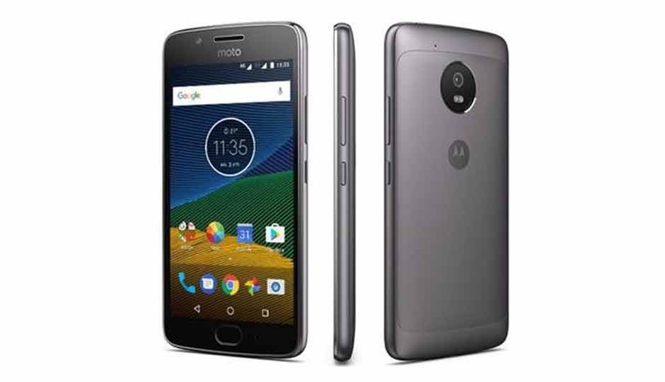
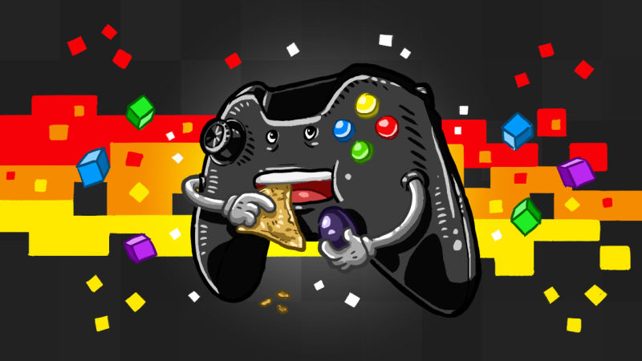

Second Project - First Individual One
As future content creators, I had to make all the decisions a real magazine makes. What to text about, what to focus on, how should I create an article and many more things.
But it wasn't really like this, because first of all, a magazine needs readers, and to create a magazine, I had first of all to research for am I going to write and create an online magazine.
Research
The research for this project was a little bit easier, because it didn't really involve looking for a company or a customer, but more likely to create surveys for people, and because of the survey, I left online on different Facebook groups, I got a lot of answers on what people whould love to read about and what they are interested into actually.
And after a few days, I closed the survey, starting to process all the answers from the survey. In the end, the magazine was a tech magazine, with accent on smartphones, laptops, gaming, software, etc.
I had the informations, now, I had to design a website based on those informations, something to fit the main theme, and yet to look like a magazine.
And after so many sketches and checking different online tech magazines, I finally made the design
Keep Coding! Deadline is coming!
After all the design process, everything left to do was the coding part, which I really enjoyed, I had to code everything by myself and because of this I learned a lot of new things.
I had to google for many features, to read about how they work and how I can create them. So overall, it was a project were I learned a lot on the development area, but I still had problems with my imaginations when it comes to the design.
Let's not forget about Trelo
An online platform, made to help us with time management, deadlines and task prioritising, Trelo was more like a "to do list", but it was a fast tool, where you had the options to move the tasks from a category to another, and so, in some cases, to come back to a task for different bug fixes or something similar.
To ENERGY Magazine's Website...

